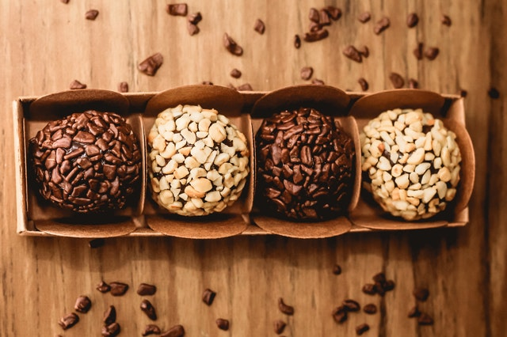

Brigadeiro

- 1 can sweetened condensed milk
- 1 tablespoon butter
- 3 tablespoons powdered chocolate
- Chocolate sprinkles as needed
- In a medium saucepan, add condensed milk, butter and chocolate.
- Cook on a low heat, stirring constantly, for 10 minutes.
- Let brigadeiro rest until it reaches room's temperature, then make small balls with your hands and roll on chocolate sprinkles.